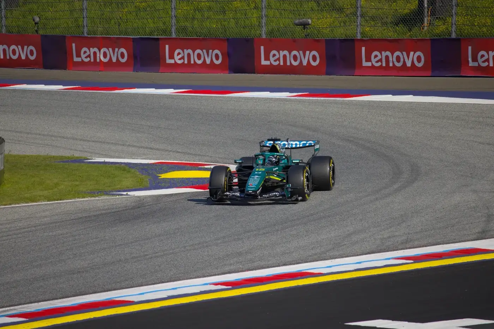
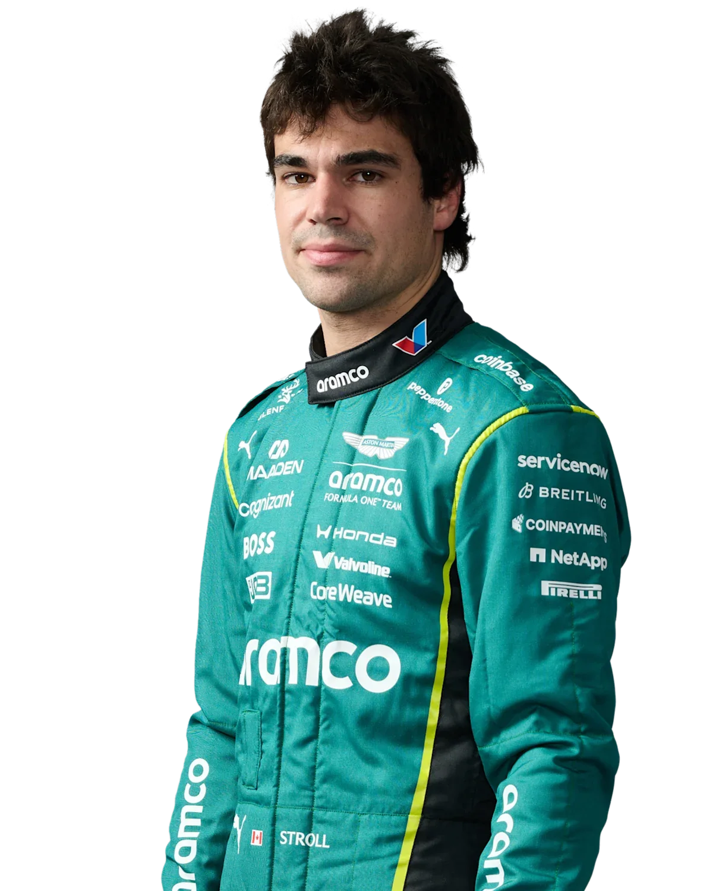
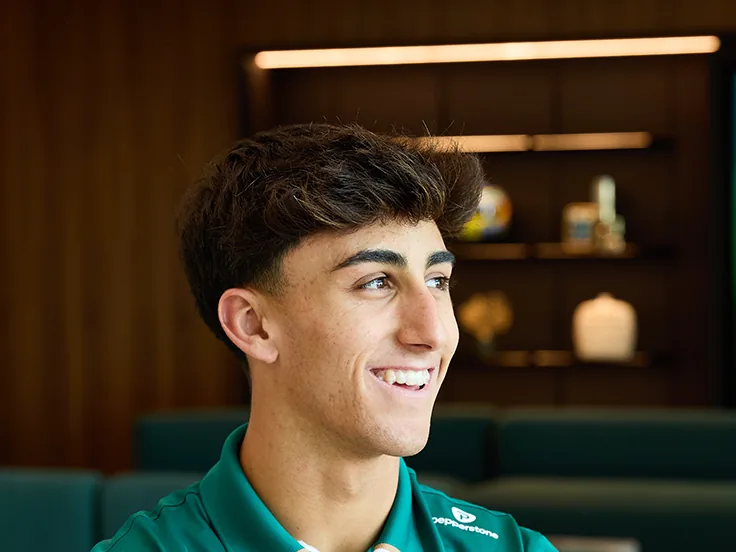
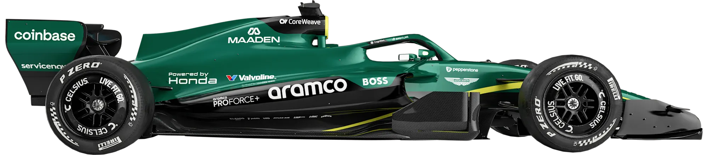
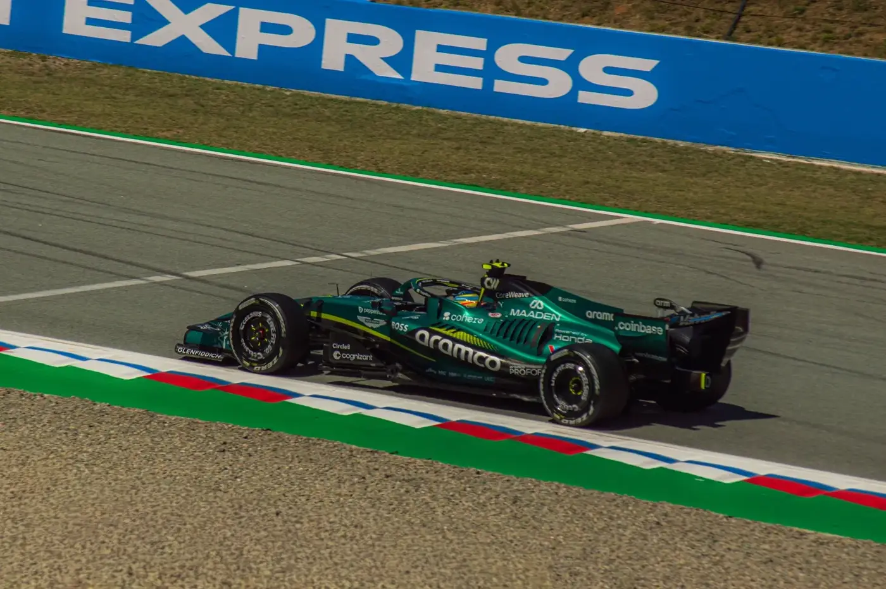
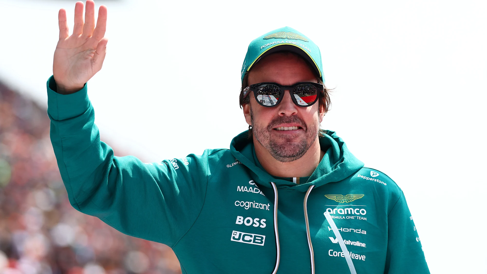
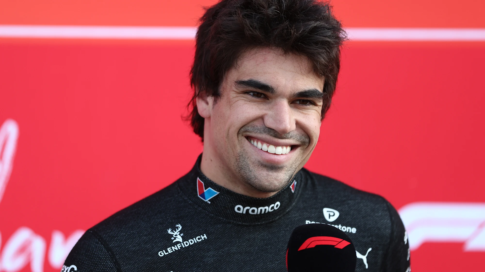

Silverstone
La fábrica ocupa el mismo complejo que el circuito donde nació la Fórmula 1 en 1950. Túnel de viento propio, simulador de última generación y fábrica de composites en un solo campus.

Silverstone · Temporada 2026
La escudería que devolvió el verde a la Fórmula 1. Ahora como equipo oficial Honda, con Adrian Newey al mando y Fernando Alonso al volante.
La escudería
Aston Martin Aramco Formula One Team compite bajo bandera británica desde Silverstone. En 2026 se convierte en equipo oficial Honda, con Adrian Newey como Team Principal y una plantilla de más de 800 personas detrás del AMR26.
La fábrica ocupa el mismo complejo que el circuito donde nació la Fórmula 1 en 1950. Túnel de viento propio, simulador de última generación y fábrica de composites en un solo campus.
Executive Chairman. Lideró en 2018 el consorcio que salvó al equipo y en 2020 tomó el control de Aston Martin Lagonda para devolver la marca a la parrilla.
Team Principal desde 2026 y socio del equipo. El diseñador más laureado de la F1 lidera el proyecto técnico del AMR26 tras su llegada en 2025.
Historia
Aston Martin debuta en Fórmula 1 con el DBR4, pilotado por Roy Salvadori y Carroll Shelby. Participa en cinco carreras entre 1959 y 1960 sin lograr puntos.
El DBR5 cierra la primera etapa de la marca en la categoría. La F1 queda aparcada durante casi seis décadas.
Un consorcio liderado por Lawrence Stroll adquiere Force India y la convierte en Racing Point. La estructura de Silverstone sobrevive y se refuerza.
Stroll toma una participación en Aston Martin Lagonda. La fusión de marca y equipo abre la puerta al regreso oficial.
Nace Aston Martin Cognizant F1 Team con el AMR21, Sebastian Vettel y Lance Stroll. Llega el podio de Bakú.
Con Fernando Alonso y el AMR23, el equipo suma ocho podios y 280 puntos: quinto en el campeonato de constructores.
Temporada discreta: quinto con 94 puntos y sin podios. En septiembre se anuncia el fichaje de Adrian Newey, que se incorpora en 2025 como Managing Technical Partner.
Newey trabaja ya en el coche de 2026 mientras el equipo cae a séptimo con 89 puntos. Honda se convierte en socio oficial de motor y Andy Cowell asume la dirección.
Debuta el AMR26 con el motor Honda RA626H, la nueva reglamentación 50:50 y Adrian Newey como Team Principal. El equipo compite como escudería oficial de fábrica.
Temporadas
Datos de constructores sincronizados automáticamente con la API pública de Fórmula 1. La temporada se detecta por el año en curso.
Próximo Gran Premio
Último Gran Premio
| Año | Pilotos | Chasis | Pos. | Podios | Puntos |
|---|---|---|---|---|---|
| 2021 | Vettel · Stroll | AMR21 | 7º | 1 | 77 |
| 2022 | Vettel · Stroll | AMR22 | 7º | 0 | 55 |
| 2023 | Alonso · Stroll | AMR23 | 5º | 8 | 280 |
| 2024 | Alonso · Stroll | AMR24 | 5º | 0 | 94 |
| 2025 | Alonso · Stroll | AMR25 | 7º | 0 | 89 |
| 2026 | Alonso · Stroll | AMR26 | 10º | 0 | 7 |
Momentos
Cargando momentos…
Podios, remontadas y vueltas rápidas calculados con los resultados reales de cada temporada. Se actualiza solo con cada carrera.
Pilotos
Temporada 2026
Piloto titular · Bicampeón del mundo
Oviedo, 1981. Dos títulos mundiales (2005 y 2006), 32 victorias y 106 podios. Afronta su cuarta temporada con el equipo a los 44 años, con 425 Grandes Premios a sus espaldas.

18 CANTemporada 2026
Piloto titular
Montreal, 1998. Debutó en F1 en 2017 y encara su octava temporada con la estructura de Silverstone. Tres podios, una pole y 189 Grandes Premios disputados.

AcademiaCantera
Primer piloto de la Aston Martin Aramco Driver Academy · Fórmula 2 con PREMA
Les (Lleida), 2004. El catalán se convirtió en el primer fichaje de la academia de jóvenes talentos del equipo y en 2026 debuta en Fórmula 2 con PREMA, con la librea verde de Aston Martin. Antes compitió en F3 peleando por el título y en abril de 2026 se subió por primera vez a un GT3, un Vantage de Comtoyou, junto a Lance Stroll y Roberto Merhi en Paul Ricard.
Ingeniería
El primer Aston Martin diseñado por Adrian Newey y el primero con motor Honda de fábrica. Más ligero, más estrecho y con aerodinámica activa: la mayor revolución técnica en una generación.

AMR26 · 2026
Calendario
Cargando calendario…
Galería
Cargando galería de circuitos…
Una tarjeta por Gran Premio disputado. Si hay foto del circuito se muestra la foto; si no, el trazado. La galería crece sola según avanza la temporada.
Actualidad
Alonso reflexiona sobre la oportunidad perdida en la clasificación de México.

El Team Principal analiza el debut del coche y el rumbo del proyecto.

Cowell pasa a Chief Strategy Officer y Newey asume el mando deportivo.
Únete
Regístrate y forma parte de la afición de Aston Martin en F1.